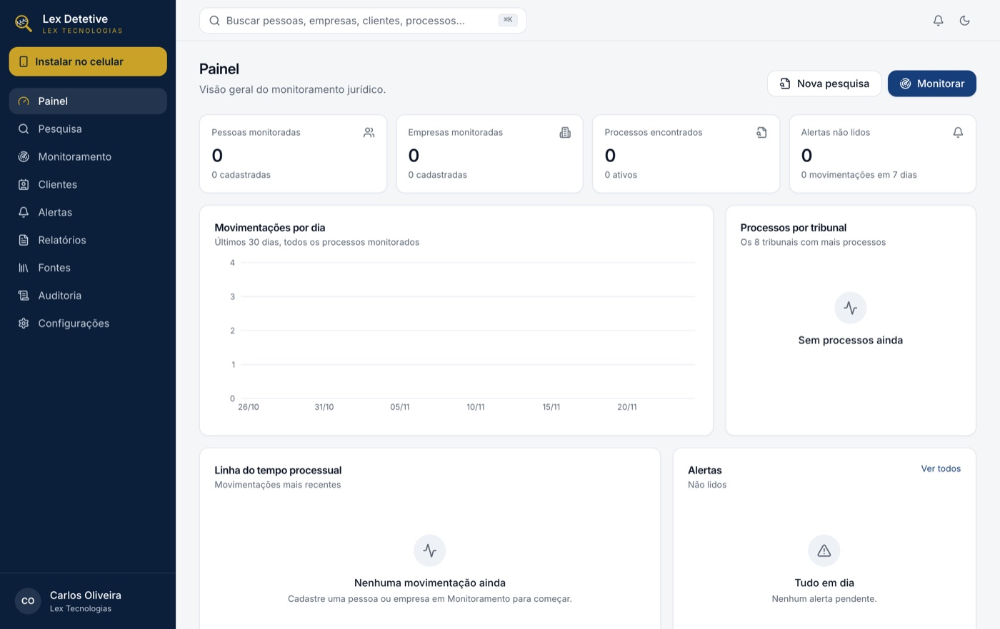
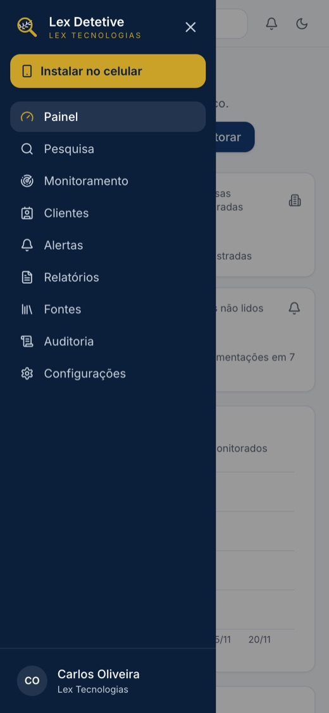
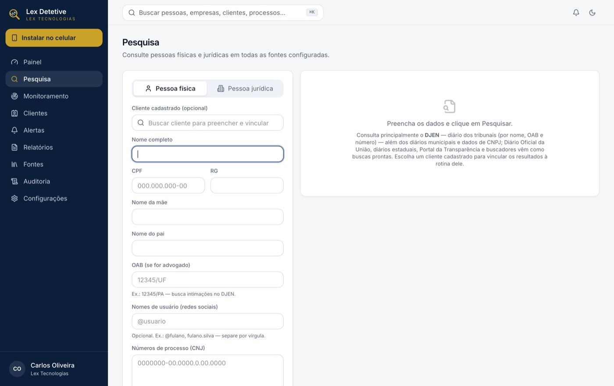
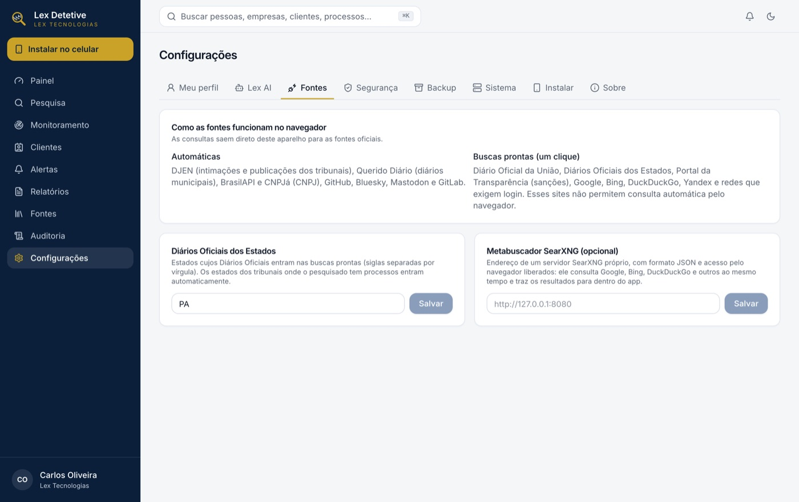
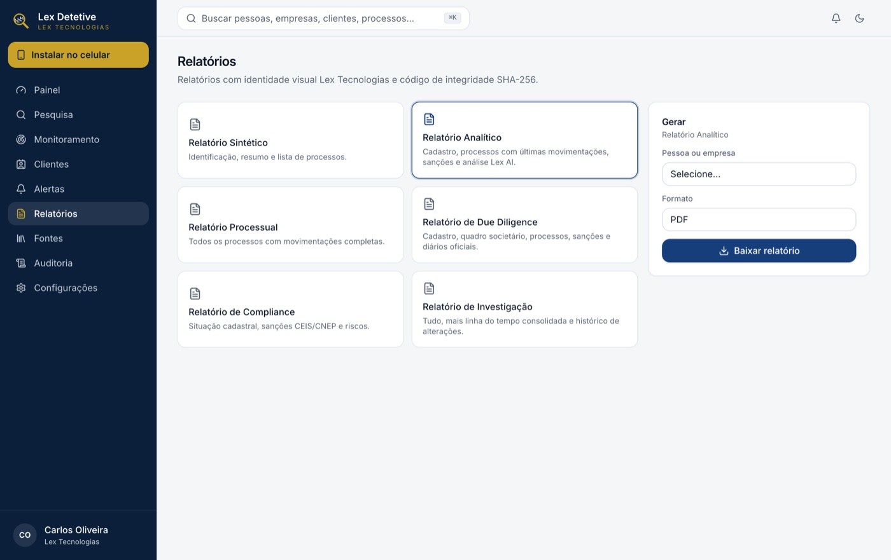
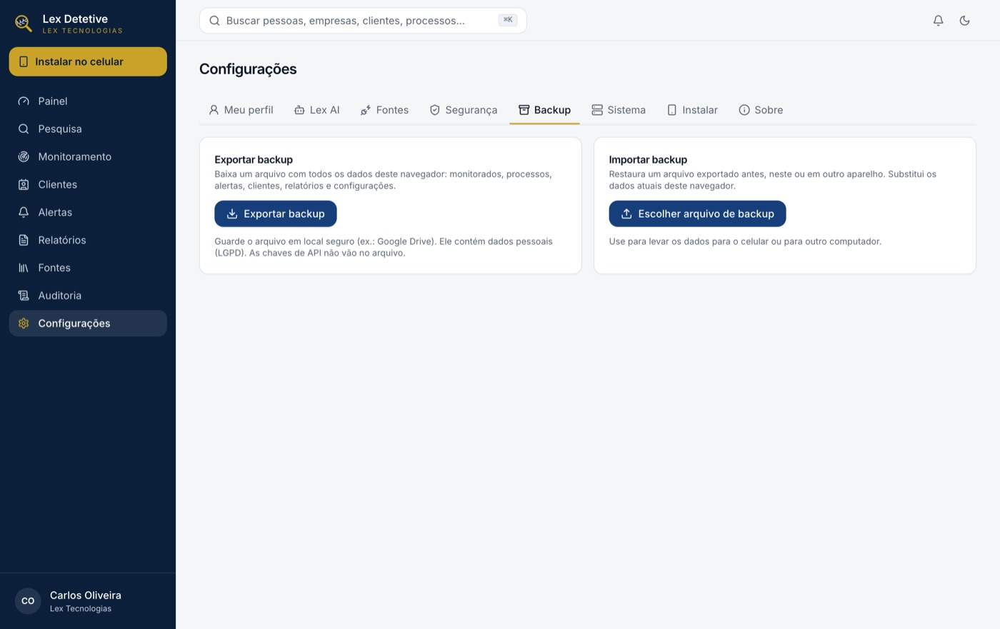
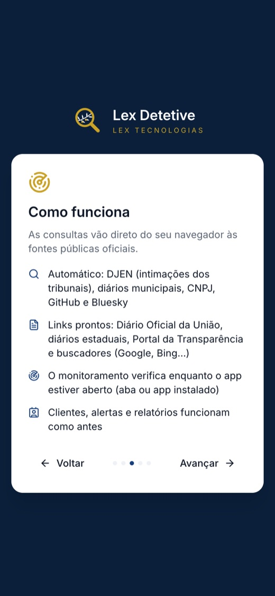
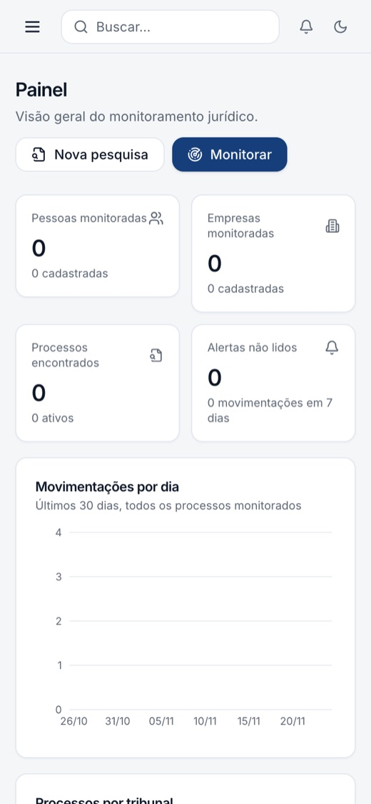

Pesquisa e monitoramento jurídico, direto no seu navegador.
Encontre processos, intimações, publicações em diários oficiais, dados de empresas e perfis públicos de pessoas e empresas. Monitore e receba alertas. Gere relatórios prontos para o cliente.
USE AQUI

Três passos, sem instalar nada
O Lex Detetive é um aplicativo web: você abre pelo navegador, como um site, e pode instalá-lo na tela inicial do celular ou do computador. Não há conta, servidor ou mensalidade.
Abra e se apresente
Clique em Use aqui. No primeiro acesso, uma apresentação curta explica o app e pede só seu nome (e uma foto, se quiser).
Pesquise
Digite nome, CPF, CNPJ, OAB ou número do processo. O app consulta as fontes públicas oficiais e mostra processos, partes, publicações e dados cadastrais.
Monitore e acompanhe
Com um clique a pessoa ou empresa passa a ser monitorada. As novidades viram alertas e tudo pode virar relatório em PDF, Word ou Excel.
Tudo o que a rotina jurídica pede
Feito por advogado, para advogados, peritos, investigadores e equipes de compliance.
Processos e intimações
Fonte principal: DJEN, o Diário de Justiça Eletrônico Nacional do CNJ, com publicações de todos os tribunais integrados.
Conferência de CPF
Compara o CPF/CNPJ citado nas publicações com o cadastrado e aponta possíveis homônimos.
Alertas inteligentes
Avisa novos processos, intimações e movimentações recentes, sem repetir publicações antigas.
Dados de empresas
Razão social, situação, sócios, endereço, Simples e MEI pelas APIs públicas BrasilAPI e CNPJá.
Diários oficiais
Diários municipais automaticamente e buscas prontas no Diário Oficial da União e nos diários dos 27 estados.
Redes e internet
Perfis públicos por nome de usuário e buscas prontas no Google, Bing, DuckDuckGo e Yandex.
Clientes
Cadastro completo, vínculo de processos e sugestão automática do cliente quando ele aparece nas partes.
Relatórios forenses
Seis modelos (sintético, analítico, processual, due diligence, compliance e investigação) com resumo de cada processo.
Lex AI (opcional)
Pareceres e resumos com a IA de sua escolha: Gemini, Claude, OpenAI, OpenRouter ou Ollama local.
Veja como é
Imagens reais do aplicativo, no computador e no celular.







De onde vêm as informações
Somente fontes públicas oficiais. As consultas saem do seu navegador direto para elas. Alguns sites não permitem consulta automática; para esses, o app monta a busca e você abre com um clique.
Automáticas
O app consulta e traz o resultado para dentro.
Buscas prontas
Um clique abre o resultado no site oficial.
Use como aplicativo no celular
Ícone na tela inicial, tela cheia e abertura rápida. Dentro do app, o botão Instalar no celular do menu mostra estas mesmas instruções.
iPhone e iPad
- Abra o Lex Detetive no Safari.
- Toque em Compartilhar (quadrado com seta).
- Toque em Adicionar à Tela de Início.
- Toque em Adicionar.
Android
- Abra o Lex Detetive no Chrome.
- Toque no menu ⋮ (canto superior).
- Toque em Instalar app.
- Confirme em Instalar.
Computador
- Abra no Chrome ou no Edge.
- Clique no ícone de instalar, no fim da barra de endereço.
- Clique em Instalar.
- No Safari do Mac: Arquivo → Adicionar ao Dock.
Manual de uso
Clique em cada tópico para abrir.
1. Primeiro acesso
- Clique em Use aqui.
- Leia a apresentação (use Avançar).
- Informe nome e sobrenome; a foto e o escritório são opcionais.
- Clique em Começar a usar. O menu passa a mostrar seu primeiro e último nome, com a foto.
Não há senha nem conta. Se outras pessoas usam o mesmo aparelho, ligue a senha de bloqueio em Configurações → Segurança.
2. Pesquisa
- Escolha Pessoa física ou Pessoa jurídica.
- Preencha o que souber: nome, CPF/CNPJ, OAB (para intimações de advogado), nomes de usuário em redes sociais e números de processo.
- Em pessoa jurídica, digite o CNPJ e clique em Buscar dados para preencher razão social, nome fantasia e sócios.
- Clique em Pesquisar. O quadro Fontes consultadas mostra o resultado de cada fonte.
- Na lista de processos, filtre por ano e use Vincular ao cliente: o app sugere o cliente cadastrado que aparece nas partes.
3. Monitoramento
- Depois de pesquisar, clique em Monitorar, ou cadastre em Monitoramento → Novo monitoramento.
- Escolha a frequência (de 1 minuto a 24 horas).
- Consultar agora atualiza todos os monitorados com um clique; Consultar na linha atualiza só um.
- A verificação automática roda enquanto o app estiver aberto, numa aba ou instalado. É uma limitação dos navegadores: um site não trabalha com a janela fechada.
4. Alertas
- Novos processos, intimações, citações e movimentações recentes viram alertas, com ficha do processo (partes, vara, marcos, audiências).
- Publicações antigas que a fonte entrega depois vão para o histórico, sem alerta repetido.
- À direita ficam os autores e réus dos alertas: clique no nome para filtrar. Se o nome já é cliente, o app pergunta se deve vincular (Sim/Não); se não é, oferece Cadastrar cliente.
5. Clientes
- Cadastro completo de pessoa física ou jurídica, com endereço (preenchido pelo CEP), contatos e redes sociais.
- No cadastro de empresa, o CNPJ preenche os dados públicos automaticamente.
- Monitorar o cliente cria a rotina dele: todo processo encontrado é vinculado ao cliente.
6. Relatórios
- Na tela do monitorado ou em Relatórios, escolha o modelo (sintético, analítico, processual, due diligence, compliance ou investigação) e o formato.
- Cada processo tem um quadro Em resumo para leitura rápida; as tabelas não partem palavras.
- Seu nome, registro (OAB etc.), escritório e logomarca saem na assinatura e no cabeçalho. Configure em Configurações → Meu perfil.
7. Configurações
- Meu perfil: nome, foto, escritório, atividade, registro e logomarca dos relatórios.
- Lex AI: escolha o provedor de IA e informe a chave, que fica só neste navegador. Para o Ollama local, libere o acesso do site (instruções na própria tela).
- Fontes: estados dos diários oficiais e um servidor SearXNG próprio (opcional).
- Segurança: senha de bloqueio opcional.
- Backup: exportar e importar todos os dados.
- Sistema: monitoramento automático, máscara de CPF/CNPJ, espaço usado e proteção contra limpeza do navegador.
8. Backup e troca de aparelho
- Em Configurações → Backup, clique em Exportar backup. Um arquivo .json é baixado.
- Guarde o arquivo em local seguro (por exemplo, no Google Drive). Ele contém dados pessoais.
- No outro aparelho, abra o Lex Detetive, vá em Configurações → Backup → Escolher arquivo de backup.
Importante: se você apagar os dados de navegação do site, os dados do app também são apagados. Faça backups com frequência.
9. Dúvidas frequentes
Preciso de internet? Para pesquisar e monitorar, sim. O app abre e mostra os dados já salvos mesmo sem internet.
Como recebo as atualizações? Automaticamente: feche e abra o app (ou a aba) com internet e a versão nova entra sozinha. Se o app estiver aberto quando sair uma versão nova, aparece o aviso Nova versão disponível com o botão Atualizar agora. Seus dados são mantidos.
Quanto custa? Nada. Só a IA na nuvem, se você escolher usar, cobra direto do provedor (alguns têm cota gratuita).
Por que algumas fontes são “buscas prontas”? Diário Oficial da União, Portal da Transparência, Google, Bing e outros não permitem consulta automática a partir do navegador. O app monta a busca e você abre o resultado oficial com um clique.
Encontrei um homônimo. Informe o CPF/CNPJ do monitorado: o app confere o documento citado nas publicações e marca os processos com CPF diferente.
Seus dados ficam com você
- Tudo é guardado no navegador do seu aparelho; não há servidor da Lex Tecnologias recebendo pesquisas ou cadastros.
- As consultas vão direto às fontes públicas oficiais.
- CPF e CNPJ aparecem mascarados por padrão (LGPD), e a auditoria registra as ações.
- Registre a finalidade de cada monitoramento (base legal da LGPD); ela sai nos relatórios.
Lex Tecnologias
O Lex Detetive é desenvolvido pela Lex Tecnologias a partir das necessidades da rotina jurídica: acompanhar intimações, conferir homônimos, reunir publicações espalhadas em dezenas de diários e entregar ao cliente um relatório claro.
A proposta é simples: ferramenta gratuita, leve e respeitosa com a privacidade, que funciona em qualquer celular ou computador, sem instalação complicada e sem mensalidade.
O Lex Detetive reúne informações públicas para apoiar o trabalho profissional. Resultados por nome podem envolver homônimos; confira sempre nos autos e nas fontes oficiais. Não substitui certidões.